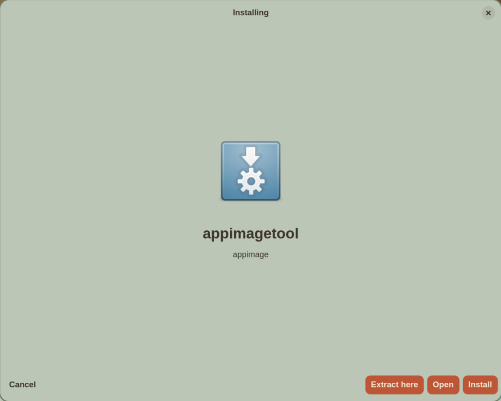
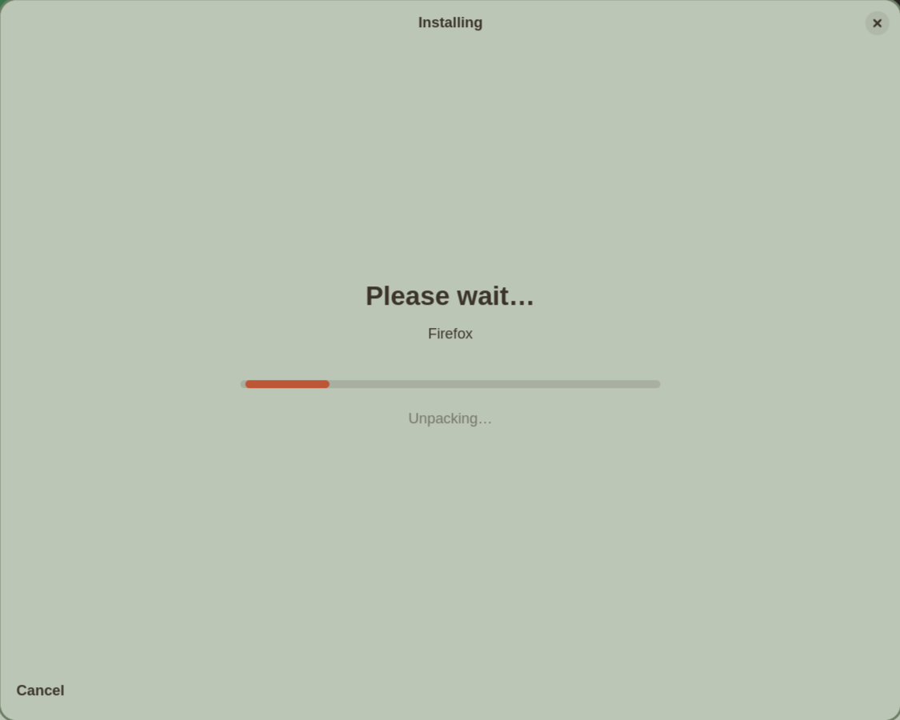
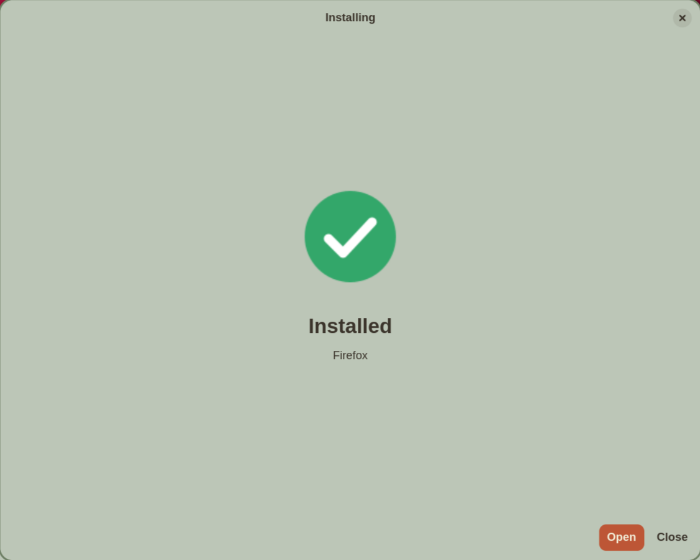
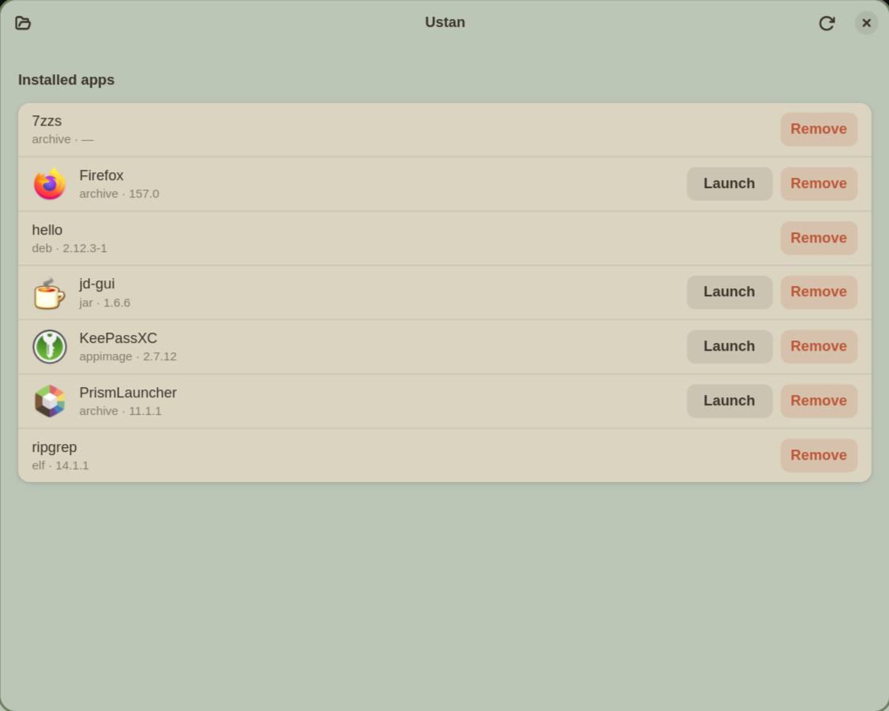

Projects /
ustan
A Windows-style installer for Linux: open a package, see what it is, press Install. Everything goes into your home directory, with a menu entry, an icon and a clean uninstall, whatever the format.
What it is
On Linux the way you install a program depends on how it was packaged: a .deb wants dpkg and root, an AppImage wants chmod +x, a Windows .exe wants a Wine prefix you set up by hand. ustan puts one front end over all of them. You double-click a file, it shows what the file is (name, format, icon), and offers Install, Open or Extract here. Nothing needs root: the app lands in your home directory with a menu entry and an icon, and removing it removes everything ustan created for it.
It is meant for people coming from Windows or macOS who just want to run something they downloaded, and for me, because Simple Linux should not make anybody learn five package tools to run a downloaded file. There is a command-line tool (ustan) and a GTK4/libadwaita front end (ustan-gui) that share the same core.


Formats and how each is installed
| Format | How it is installed |
|---|---|
.deb, .rpm, Arch .pkg.tar.* | Unpacked into ~/.local/opt/<app>. Programs run with the package overlaid on /usr (bubblewrap), so hard-coded /usr/share/<app> paths work. |
.AppImage | Copied; the icon and .desktop file are read from the image, without running it. |
.snap | Unpacked without snapd. Base and content snaps are fetched from the store (SHA3-384 verified) and run in a bubblewrap sandbox. |
Flatpak (flatpak:<id>, .flatpakref, .flatpak) | Delegated to flatpak --user. |
.exe, .msi | Run through Wine, one prefix per app. For installers (--installer, --installer-args "/S") the Start Menu shortcuts they create are turned into launchers. |
.tar.*, .zip, .7z | A menu entry for GUI programs, a command in ~/.local/bin for tools; Windows programs inside run through Wine. tar.* is streamed from disk and a multi-block .xz is decoded on several threads, so a multi-GB game archive does not have to fit in RAM. Games that ship a Wine wrapper (Kron4ek builds with start.sh) get their runner, DXVK (d3d9) and wow64 set up, and are named after the archive. |
.jar | A java -jar launcher. |
makeself .run / .sh | The payload is unpacked; the embedded script is never run. |
| Bare ELF binary | A menu entry or a command, depending on the toolkit it links. |
How it works
The workspace has three crates: core (the format backends, manifests, updates, Wine runner discovery), cli and gui. Each format has its own backend in crates/core/src/backend/ (deb, rpm, arch, appimage, snap, flatpak, exe, jar, archive, elfbin). The container-format parsers (ar, rpm, ELF, PE, .lnk shortcuts, parallel xz) are written in Zig under zig/ and built by crates/core/build.rs; the rest is Rust.
Every install writes a manifest of what was created, and that manifest is what makes uninstall clean. Runtimes that apps depend on (snap bases, for example) are tracked separately: ustan list marks them and ustan prune removes the ones no app uses any more.
Downloads (ustan install <url>) are verified against a checksum published next to the file or by the store, and ustan says so when nothing could be checked. After an install, the package's programs are scanned for libraries that are neither in the package nor on the system; the result is reported, not guessed.
Updates come from the Flatpak remote, the store (snaps), GitHub Releases (AppImages that carry gh-releases-zsync update info) and the HTTP validator of the URL a file was installed from. ustan watch and ustan autoupdate check in the background.
Using it
ustan install <file | url | flatpak:id> [--installer] [--installer-args "/S"] [--sha256 …]
ustan inspect <file | url> what is this, without installing
ustan list installed apps (runtimes are marked)
ustan remove <id> ustan prune remove unused runtimes
ustan update [id] [--check] ustan scan [--update] AppImages found elsewhere on disk
ustan watch [--once] check in the background; ustan autoupdate enable|disable
ustan runner [use <name>] which Wine to use (system, PortProton, Steam Proton, …)
ustan runner get cachyos download proton-cachyos from GitHub (sha512-checked)
ustan register [--exe] [--archives] open these file types with ustan on double clickustan-gui opens the files you double-click, shows what they are with progress and a cancel button, and lists installed apps with Update / Launch / Remove. Run without a file, it opens the manager. When a launched program dies right away, the GUI shows a toast with its output. AppImages start with APPIMAGE_EXTRACT_AND_RUN=1 when FUSE 2 is missing.


Screenshots are ustan-gui on a Wayland desktop with a few sample packages installed (a .deb, an AppImage, a tarball, a .jar and a bare binary).
Messages are English by default and Ukrainian when the Simple Linux language setting says so (USTAN_LANG=uk, SIMPLE_LANG=uk, lang = "uk" in ~/.config/simple-linux/locale.toml, or a uk system locale).
Getting it
Build from source. It needs Rust and Zig; the GUI also needs GTK 4 and libadwaita 1.6.
cargo build --release --workspace
cargo test --workspace && (cd zig && zig build test)A live Gentoo ebuild is in packaging/gentoo/ (app-misc/ustan-9999, USE flags gui, flatpak, wine). packaging/package.sh builds a ustan-<version>-linux-<arch>.tar.gz with a .sha256; from the tarball, ./install.sh installs under /usr/local (PREFIX=$HOME/.local works without root) and ./install.sh uninstall removes what it installed.
What was tested, and what was not
bubblewrap is used to make a package believe it is installed. It is not a security boundary: programs still see your home directory. Install what you trust.
- There are integration tests for every format and a CI workflow, plus Rust and Zig unit tests.
- Most behaviour was verified on one machine (Gentoo, OpenRC, niri). Anything that talks to another package manager's runtime, such as snaps that rely on other snaps, or Windows installers, can still fail in ways the tests cannot foresee.
- For the packaging, I checked a tarball install and uninstall into a
DESTDIR,desktop-file-validateandappstreamcli. The Gentoo ebuild was only checked withemerge -pv; it was not built. - The latest tagged version is 0.2.2 (2026-10-07). The archive streaming, the multi-threaded xz decoding,
ustan runner get cachyosand the Wine-wrapper game support are in the unreleased changelog section. - The source is GPL-2.0-or-later, but the built binaries also contain the GPL-2.0-only crate
rust-lzo(LZO for squashfs), so as a combined work they are distributed under GPL-2.0.
Related
ustan ships with Simple Linux; its language setting comes from the shared simple-locale rule. For terminal programs on the same desktop see tui-shim; Ring-2Zero is a separate project. The source is at github.com/tarilka0gg/ustan.